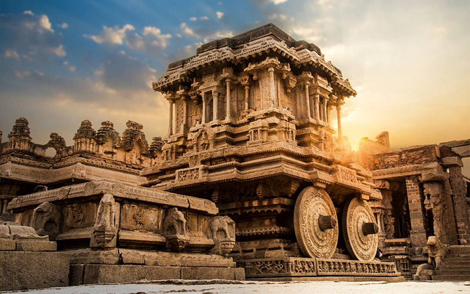
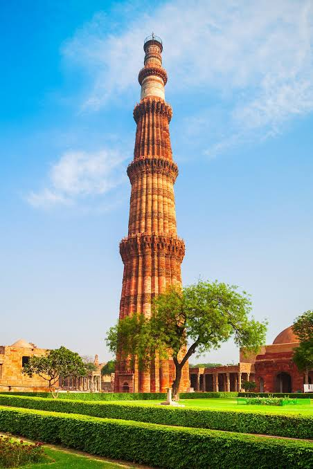
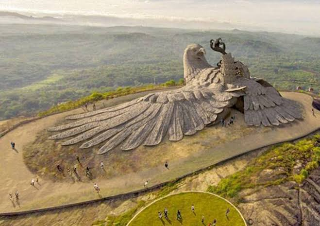
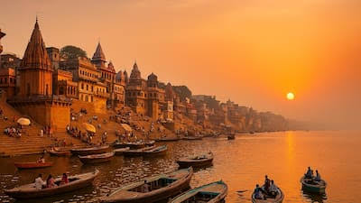
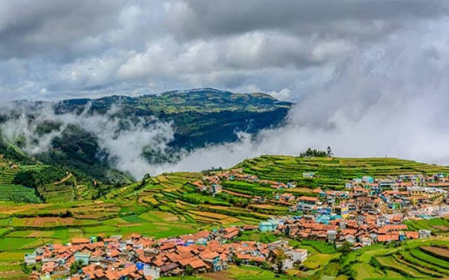

Hampi
📍 Karnataka
Hampi is a historic destination famous for its ancient temples, magnificent ruins and beautiful stone architecture. The famous Stone Chariot is one of its most impressive attractions.
Exploring the Beautiful Places of India
Traveling allows us to discover new places, experience different cultures and create unforgettable memories. Here are some of the beautiful destinations from my travel journey across India.

📍 Karnataka
Hampi is a historic destination famous for its ancient temples, magnificent ruins and beautiful stone architecture. The famous Stone Chariot is one of its most impressive attractions.

📍 Delhi
Qutub Minar is one of India's most famous historical monuments. Its tall tower and detailed architecture represent the rich history and heritage of Delhi.

📍 Kerala
Jatayu Earth Center is famous for its enormous sculpture of Jatayu. The location is surrounded by beautiful green hills and offers a wonderful view of nature.

📍 Uttar Pradesh
Varanasi is one of India's oldest cities and is situated on the banks of the Ganges. Its ghats, temples and beautiful river views make it a memorable travel destination.

📍 Himachal Pradesh
Manali is surrounded by beautiful mountains, green valleys and rivers. It is a wonderful destination for enjoying nature and peaceful mountain landscapes.

📍 Tamil Nadu
Ooty is a beautiful hill station known for its green landscapes, tea plantations and pleasant climate. The surrounding hills make it a perfect place to relax and enjoy nature.
This travel log is a collection of beautiful destinations across India, including historical monuments, cultural locations, mountains and natural landscapes.